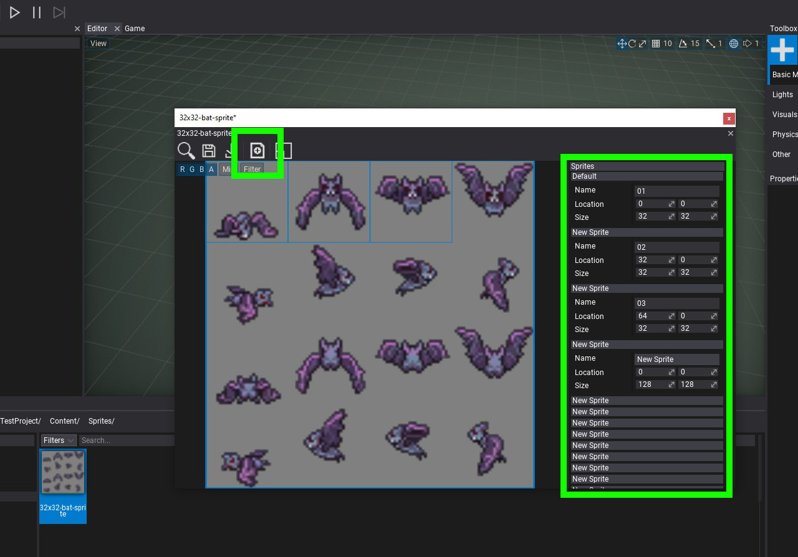
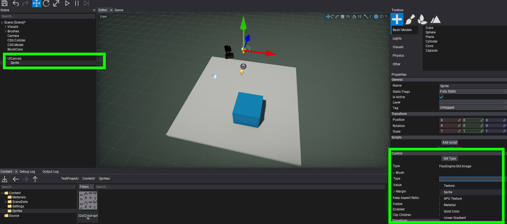
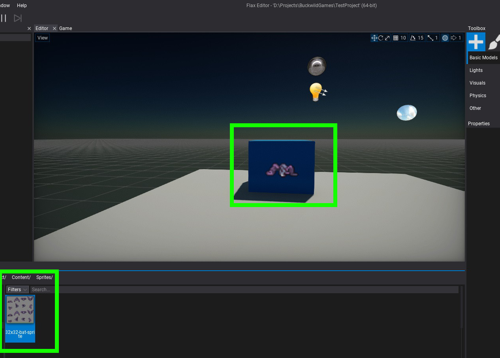

Modifying Sprite Atlas
A sprite atlas refers to both the sprite and frame data. Currently frame data can be entered in one of two ways. One method is to enter frame location and size values after clicking the add frame "+" button. Once a frame has been added you can enter location and size values on the right-side navigation. Another method for adding a frame to the atlas is through code, the API reference is here.
In the below image the add frame "+" button has been clicked a number of times and frame data values are being input.

After all the frame data is input you are ready to add the sprite to the scene. Right click on a UI canvas to add a UI Control for an image sprite and configure Image values in the properties view. Another way to add the sprite to the scene is to simply drag the sprite into the scene heiarchy. You can modify which frame of the sprite is depicted in the properties window.
Note
Future versions of Flax Editor will provide for automtaic creation of the sprite atlas from different sprite sheets.

The sprite is now ready for use or animation.
